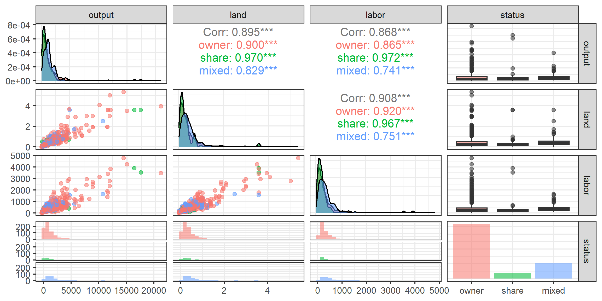
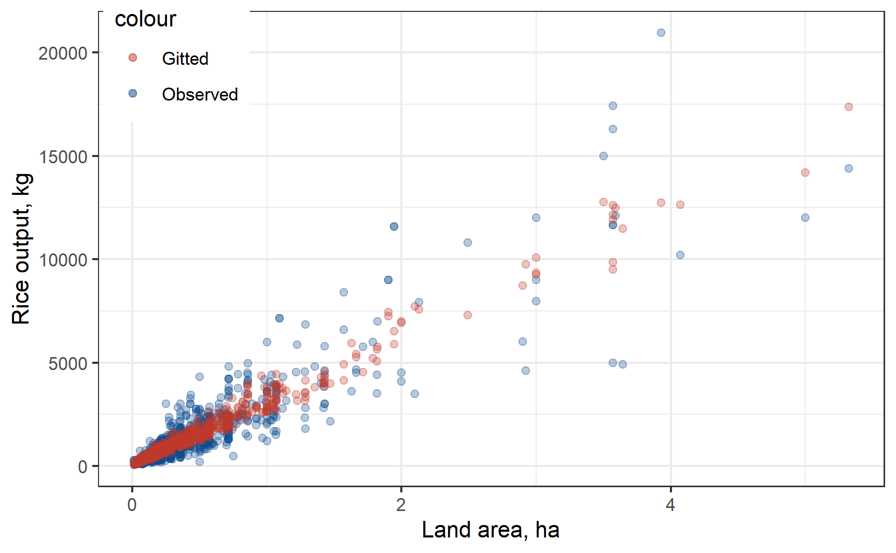
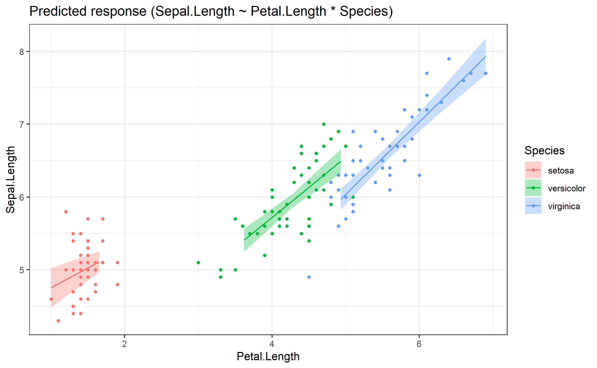
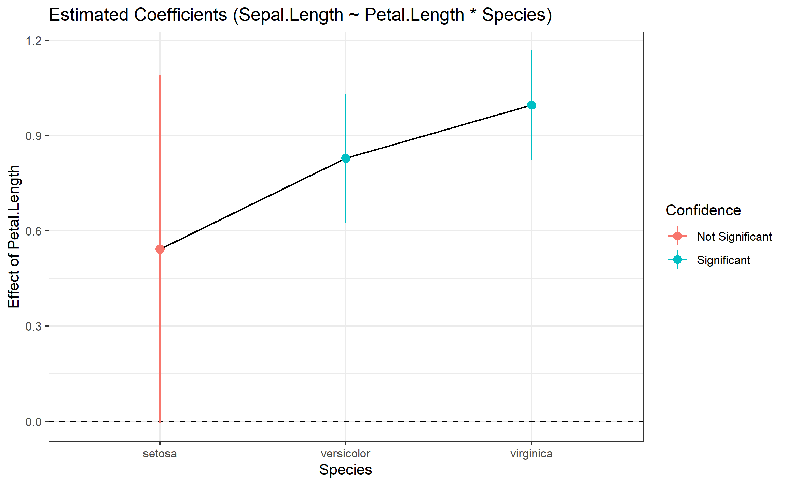
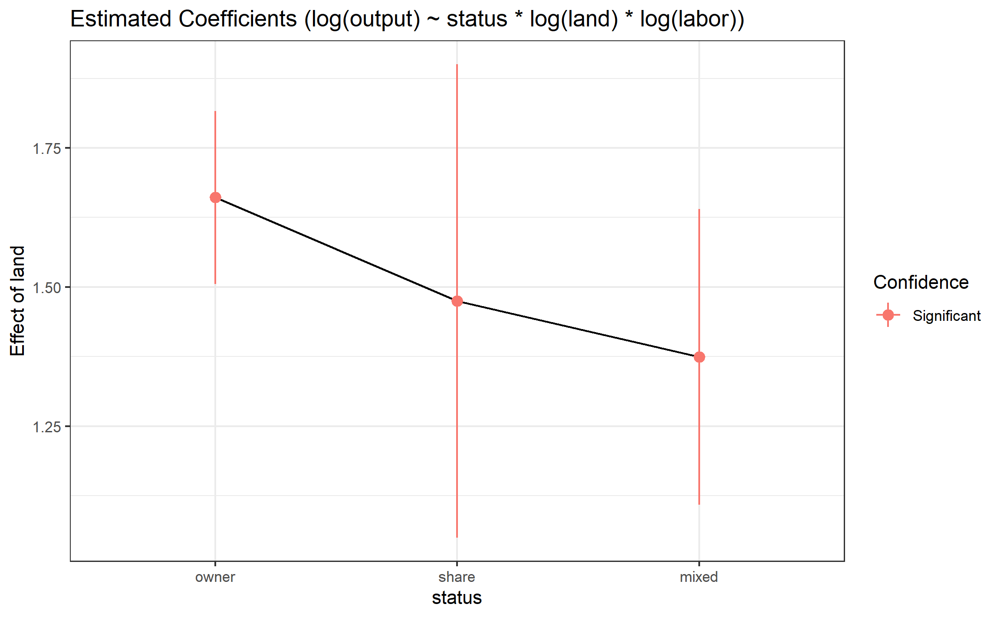

Multiple Linear Regression: practical aspects
Eduard Bukin
Relevance of a theory in econometric models
The Basic Theory of Production (Sadoulet & de Janvry, 1995, Chapter 3)
Farm’s production function
\[ h(q,x,z) = 0, \]
where:
\(q\) - output quantities (agricultural produce)
\(x\) - variable input quantities (fertilizers, labor, seed, water, …)
\(z\) - fixed factors (private: land, equipment; public: infrastructure, extension; exogenous features …)
Farm’s optimization problem
Prices of inputs \(w^{'}\) and outputs \(p^{'}\) affect farmers decisions of:
what and how much to produce \(q\), and
what and how much to use as the input \(x\).
Farm’s objective function is to maximize own profit:
\[ \max_{x,q} \;\;\; p^{'}q-w^{'}x, \\ \text{s.t.} \;\; h(q,x,z) = 0 \]
Solution to the producer’s optimization problem
\[ \max_{x,q} \;\;\; p^{'}q-w^{'}x, \\ \text{s.t.} \;\; h(q,x,z) = 0 \]
Is a set of input demand and output supply functions:
\[ \begin{cases} x = x(p,w,z), & \text{factor demand function} \\ q = q(p,w,z), & \text{supply function} \end{cases} \]
Farm’s optimization problem is
Structural form
\[ \max_{x,q} \;\;\; p^{'}q-w^{'}x, \\ \text{s.t.} \;\; h(q,x,z) = 0 \]
Reduced forms \[ \begin{cases} x = x(p,w,z), & \text{factor demand function} \\ q = q(p,w,z), & \text{supply function} \end{cases} \]
Farm’s Production Function (Sadoulet & de Janvry, 1995, Appendix A.4)
Mathematical function that transforms inputs quantities \(x\) into output \(q\).
Taylor Expansion
Value of any function could be approximated at an arbitrary point \(x_0\) with a Taylor expansion:
\[ f(x) \approx f(x_0) + f^{'}(x_0)(x - x_0) + \frac{f^{''}(x_0)}{2!}(x - x_0)^2 + \cdots . \]
For example:
\[ e^x = \sum_{n=0}^{\infty} \frac{x^n}{n!} \approx 1 + x + \frac{x^2}{2!} + \frac{x^3}{3!} + \cdots \]
\[ e^{0.4} \approx 1 + .4 + \frac{.4^2}{2!} + \frac{.4^3}{3!} + \frac{.4^4}{4!} + \frac{.4^5}{5!} \\ \approx 1 + .4 + .16/2 + 0.064/6 + 0.0256/24 + 0.01024 / 120 \\ \approx 1 + .4 + .08 + 0.0106(6) + 0.00106(6) + 0.000106(6) \]
First order Taylor approximation
\(q \approx f(x)\) at \(x_0\).
\[ f(x) \approx \underbrace{f(x_0) - x_0}_{\alpha} + \underbrace{f^{'}(x_0)}_{\beta}\, x \]
\[ q \approx \alpha + \beta \, x \]
\(q \approx f(x_1, x_2)\) at \(a, b\)
\[ f(x_1, x_2) \approx \underbrace{f(a,b) - a - b}_{\alpha} + \underbrace{f_{x_1}^{'}(a,b)}_{\beta_1}\, x_1 + \underbrace{f_{x_2}^{'}(a,b)}_{\beta_2}\, x_2 \]
\[ q \approx \alpha + \beta_1 \, x_1 + \beta_2 \, x_2 \]
Second and greater order Taylor approximation
Results in polynomial functions with interaction terms:
\[ q \approx \alpha + \beta_1 \, x_1 + \beta_2 \, x_2 + \beta_3 \, x_1^2 + \beta_4 \, x_2^2 + \beta_5 x_1 x_2 \]
Non-linear production functions
Consider
\[q = f(x_i)\]
(function of several variables \(x_i\)), where
\[x_i = e^{\ln x_i}\]
Then,
\[ \ln q = \ln f(e^{\ln x_i}) \; \; \; \; \text{or} \; \; \; \; \ln q = g(\ln x_i) \]
Let us approximate \(\ln q = g(\ln x_i)\) using the Taylor expansion.
Fist order Taylor approximation
\[ \ln q \approx \alpha + \sum_i \beta_i \ln x_i \]
This is a Cobb-Douglas production function:
\[ q \approx e^\alpha \prod_i x_i^{\beta_i} \]
Second order Taylor approximation
\[ \ln q \approx \alpha + \sum_i \beta_i \ln x_i + \sum_{ij} \gamma_{ij} \ln x_{ij} \]
This is a translog production function
Example 1. production function
Problem and research question
Policy makers are considering to abolish the share-cropping land tenure.
As an alternative either owner-cultivation with hired labor or pure rental relationship should be established.
Main rationale is in the president’s statement that sharecropping is inefficient farm structure.
Theoretical debate
Contract theory (Dasgupta, Knight, & Love, 1999) sees sharecropping as a form of the optimal risks and incentives sharing contract.
It is a second best contract in agriculture after pure rental of hired labor contract.
Sharecropping can be as efficient as rental/labor contracts, when interlinked credit and insurance markets fail.
Research question:
Is there any negative effect of sharecropping on farms productivity?
How to answer this question?
Regression
Let us estimate a simple production function of a rice-producing farm.
\[\text{output} = \alpha + \beta_1 \text{status : share} + \beta_2 \text{status : mixed} + \beta_3 \text{land} + \beta_4 \text{labor} + e\]
where:
\(\text{output}\) is gross output of rice in kg
\(\text{land}\) the total area cultivated with rice, measured in hectares
\(\text{labor}\) total labor inputs (excluding harvest labor) in hours
\(\text{status}\) land tenure system on the farm: owner-operated, Share-cropping and mixed
Data set covers a sample of the rice-cultivating farmers in India. Source: (Feng & Horrace, 2010).
Data (1)
Rows: 1,026
Columns: 4
$ output <int> 7980, 4083, 2650, 4500, 16300, 17424, 3840, 2800, 950, 240, 150…
$ land <dbl> 3.000, 2.000, 1.000, 2.000, 3.572, 3.572, 1.420, 1.420, 0.428, …
$ labor <int> 2915, 2155, 1075, 2091, 3889, 3519, 810, 855, 460, 109, 230, 18…
$ status <fct> owner, owner, owner, owner, share, share, mixed, mixed, mixed, …Exploratory staistics (1)
| Unique (#) | Missing (%) | Mean | SD | Min | Median | Max | |
|---|---|---|---|---|---|---|---|
| output | 482 | 0 | 1405.2 | 1921.8 | 42.0 | 886.5 | 20960.0 |
| land | 300 | 0 | 0.4 | 0.5 | 0.0 | 0.3 | 5.3 |
| labor | 544 | 0 | 388.4 | 484.2 | 17.0 | 252.0 | 4774.0 |
| status | N | % |
|---|---|---|
| owner | 736 | 71.7 |
| share | 79 | 7.7 |
| mixed | 211 | 20.6 |
Exploratory staistics (2)
| owner / mean | owner / sd | share / mean | share / sd | mixed / mean | mixed / sd | |
|---|---|---|---|---|---|---|
| land | 0.44 | 0.58 | 0.36 | 0.56 | 0.44 | 0.39 |
| labor | 395.42 | 522.12 | 315.51 | 566.17 | 391.44 | 262.63 |
| output | 1435.68 | 2014.60 | 1250.65 | 2639.25 | 1356.59 | 1104.10 |
Exploratory staistics (3)
Regression and interpretation
Regression and interpretation
| Linear prod.fn. (level-level) | |
|---|---|
| (Intercept) | 6.203 (36.845) |
| statusshare | 87.849 (96.953) |
| statusmixed | -90.608 (63.901) |
| land | 2145.659 *** (111.521) |
| labor | 1.248 *** (0.126) |
| Num.Obs. | 1026 |
| R2 | 0.819 |
| R2 Adj. | 0.819 |
| F | 1158.652 |
Fitted values (1)
Fitted values (1)
Fitted values (1)
farm_dta %>%
mutate(fitted = fitted(fit1)) %>%
ggplot() +
aes(x = land,
y = output,
colour = "Observed") +
xlab("Land area, ha") +
ylab("Rice output, kg") +
geom_point(alpha = 0.3) +
theme(legend.position = c(0.1, 0.9)) +
scale_color_manual(values = c('#BF382A', '#0C4B8E')) +
geom_point(aes(y = fitted, colour = "Gitted"),
alpha = 0.3)
Fitted values (1)
farm_dta %>%
mutate(fitted = fitted(fit1)) %>%
ggplot() +
aes(x = land,
y = output,
colour = "Observed") +
xlab("Land area, ha") +
ylab("Rice output, kg") +
geom_point(alpha = 0.3) +
theme(legend.position = c(0.1, 0.9)) +
scale_color_manual(values = c('#BF382A', '#0C4B8E')) +
geom_point(aes(y = fitted, colour = "Gitted"),
alpha = 0.3) +
scale_x_log10() +
scale_y_log10()
Actual values 3D
Actual + Fitted values 3D
Fitted values 3D v.2
Assumptions
Linearity
Multicolinearity
No perfect collinearity
No
Ne2 slide


